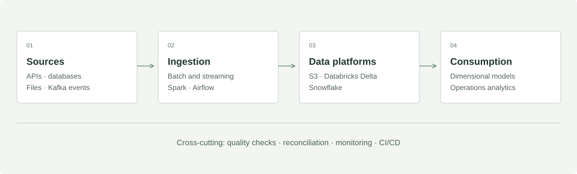

Reusable data platforms.
Batch and streaming ingestion, governed data, and reusable engineering frameworks for commerce operations.
 Spark
Spark Airflow
Airflow Databricks
Databricks- Snowflake
 Kafka
Kafka
Architecture diagrams synthesize the experience described in my resume. Illustrative schemas and design considerations explain the engineering approach; they are not internal company artifacts.
The problem
Commerce operations need reliable data across orders, fulfillment, and logistics. Rebuilding ingestion and validation logic for every new pipeline adds delivery effort and makes production support harder.
My contribution
At Nike, my work supports 4 teams and 8 products through 35 pipelines spanning transactional and dimensional data across digital orders, fulfillment, and logistics. I architected scalable Databricks pipelines using PySpark, SQL, and Delta tables to turn source data into curated datasets for analytics and operations.
I designed reusable, metadata-driven ingestion frameworks connecting APIs, SFTP, relational databases, and cloud storage. Batch and near real-time processing use Kafka, Spark Streaming, and event-driven patterns, with CDC, SCD, merge strategies, and reconciliation for incremental data processing.
I led architecture reviews, legacy Hive and on-premises migrations to Databricks, Unity Catalog migration, and Snowflake modernization. Shared engineering standards and platform patterns helped teams improve delivery consistency and reduce onboarding complexity.
Architecture

Design choices to discuss
- Batch or streaming
- Choose freshness requirements first. Kafka and Spark Streaming address event-driven needs; scheduled ingestion fits workloads that tolerate a longer refresh interval.
- Shared logic or custom pipelines
- Reusable configuration and templates reduce repeated work. Keep business-specific transformations explicit so a shared framework remains understandable.
- Incremental data and history
- Define CDC, merge, and SCD behavior together with reconciliation. An incremental load is useful only when downstream consumers can trust its state.
- Throughput and cost
- Partitioning, join strategy, caching, and file compaction affect Spark performance. Tune the workload and measure its behavior before expanding compute.
A model for order and fulfillment analytics
Illustrative data model · designed for this portfolio, not an internal schema.
dim_product
PK product_keyproduct_idproduct_category
fact_order_line
PK order_line_keyFK product_keyFK order_date_keyorder_id · quantity
dim_date
PK date_keycalendar_datefiscal_period
Grain: one row per order line. Product and date dimensions join one-to-many to order facts; stable surrogate keys keep business identifiers separate from warehouse joins.
Publishing data for downstream applications
I developed Python and Flask APIs to publish curated data for downstream applications and operational workflows. Transactional pipelines and dimensional datasets serve supply chain, order management, and operations analytics, supported by schema validation, SLA monitoring, and automated alerting.
CI/CD using Jenkins, Git, automated testing, and release workflows supports repeatable delivery. Spark tuning covers partitioning, caching, adaptive execution, broadcast joins, and file compaction.
Outcome
40%+ reduction in new pipeline development time through engineering accelerators.
Additional resume-backed work includes Snowflake tuning, Unity Catalog migration, monitoring, and cloud cost dashboards.
Let’s build what’s next.
Lead data engineering, forward-deployed engineering,
and software engineering for data and AI platforms.